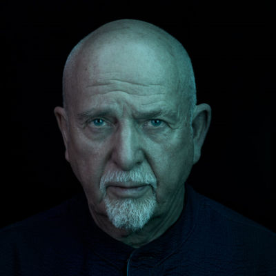
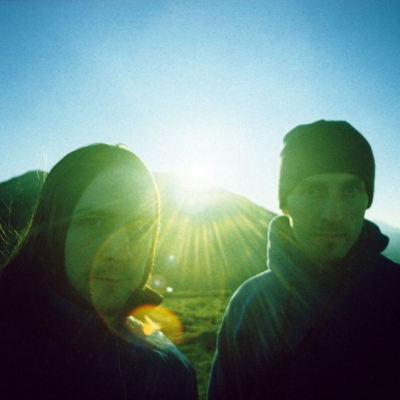
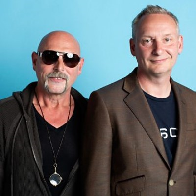
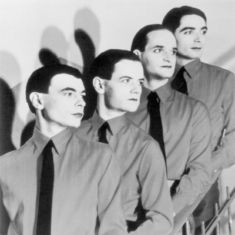
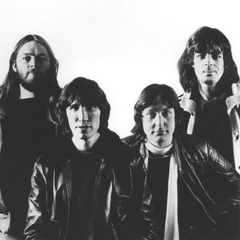

1. Peter Gabriel
Former Genesis frontman Peter Gabriel is an artist I slept on for most of my life, until I had the fortune of recieving tickets to see him, due to my parents not being able to attend. What started as an intrigue soon led to fascination and borderline obsession, as I delved deeper into his catalogue. My favourite album depends on my mood, but my most-listened to is likely 1982's Peter Gabriel IV: Security.
For more information on this artist please visit their Wikipedia page.
| Album Title | Peter Gabriel 1 | Peter Gabriel 2 | Peter Gabriel 3 | Peter Gabriel 4 (Security) | So | Us | Up |
|---|---|---|---|---|---|---|---|
| Release Year | 1977 | 1978 | 1980 | 1982 | 1986 | 1992 | 2002 |
| My Rating | 4/10 | 5/10 | 10/10 | 10/10 | 8/10 | 7/10 | 8/10 |
2. Boards of Canada
Boards of Canada are a band that I have been a fan of for over ten years. I discovered them whilst still at secondary school, through the dark web series 'Salad Fingers' - early episodes of which used 'Beware The Friendly Stranger' as background music. Their music has a haunting quality - mostly made by running their music through tape decks to warp the sound to give it a 'found sound' quality. I would love to see Boards of Canada live one day, however, seeing as they have played only a handful of gigs (and they were over twenty years ago) I find this increasingly unlikely.
For more information on this artist please visit their Wikipedia page.
| Album Title | Music Has the Right to Children | Geogaddi | The Campfire Headphase | Tomorrow's Harvest |
|---|---|---|---|---|
| Release Year | 1997 | 2001 | 2005 | 2013 |
| My Rating | 7/10 | 9/10 | 8/10 | 7/10 |
3. Orbital
Orbital, formed of brothers Paul and Phil Hartnoll, famously named themselves after the M25 London Orbital, around which many of the raves they played at happened. Famed for their heavy on improvisation live shows, they don headtorches whilst playing which gives them their famous look. The headtorches were in fact a necessary aide for seeing their electronic equipment in the early days, and the look just stuck.
For more information on this artist please visit their Wikipedia page.
| Album Title | Orbital (Green Album) | Orbital (Brown Album) | Snivilisation | In Sides | The Middle of Nowhere | The Altogether | Blue Album | Wonky | Monsters Exist | Optical Delusion |
|---|---|---|---|---|---|---|---|---|---|---|
| Release Year | 1991 | 1993 | 1994 | 1996 | 1999 | 2001 | 2004 | 2012 | 2018 | 2023 |
| My Rating | 5/10 | 7/10 | 8/10 | 10/10 | 9/10 | 6/10 | 6/10 | 8/10 | 7/10 | 9/10 |
4. Kraftwerk
Electronic pioneers Kraftwerk, from Dusseldorf, Germany are famed for their austere look yet warm sound. On 14th February 2013 I was lucky enough to see the legendary band live (albeit with only one original member), after queueing for six hours in the snow outside the Tate Modern. The photograph above is of their most famous lineup.
For more information on this artist please visit their Wikipedia page.
| Album Title | Autobahn | Radio Activity | Trans-Europe Express | The Man-Machine | Computer World | Electric Café | The Mix | Tour de France Soundtracks |
|---|---|---|---|---|---|---|---|---|
| Release Year | 1974 | 1975 | 1977 | 1978 | 1981 | 1986 | 1991 | 2003 |
| My Rating | 8/10 | 6/10 | 7/10 | 8/10 | 9/10 | 7/10 | 6/10 | 10/10 |
5. Pink Floyd
Originally from Cambridge, England, Pink Floyd (here shown in their most succesful four piece line up) was an incredible prog-rock band who spanned from psychedelic in their early days to arena rock in their latter days. Unfortunately, with Rick Wright dead, it will not be possible for me to see them live, however I have seen two of the remaining members live, with David Gilmour on my bucket list!
For more information on this artist please visit their Wikipedia page.
| Album Title | The Piper at the Gates of Dawn | A Saucerful of Secrets | Soundtrack from the Film More | Ummagumma | Atom Heart Mother | Meddle | Obscured by Clouds | The Dark Side of the Moon | Wish You Were Here | Animals | The Wall | The Final Cut | A Momentary Lapse of Reason | The Division Bell | The Endless River |
|---|---|---|---|---|---|---|---|---|---|---|---|---|---|---|---|
| Release Year | 1967 | 1968 | 1969 | 1969 | 1970 | 1971 | 1972 | 1973 | 1975 | 1977 | 1979 | 1983 | 1987 | 1994 | 2014 |
| My Rating | 6/10 | 7/10 | 5/10 | 4/10 | 6/10 | 7/10 | 4/10 | 9/10 | 10/10 | 10/10 | 10/10 | 10/10 | 7/10 | 7/10 | 6/10 |